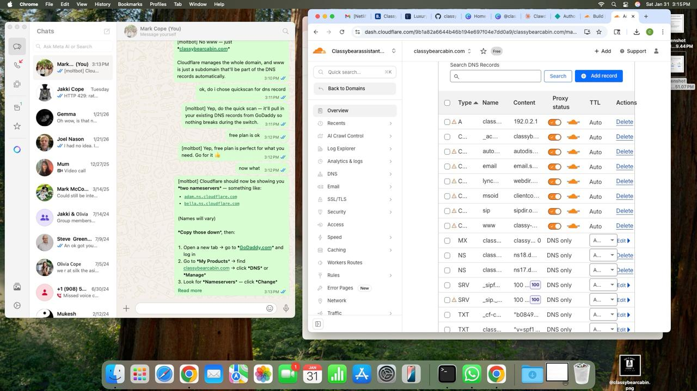

Think Gatlinburg is just a summer destination? Think again. While most tourists flock to the Smokies during fall foliage and summer vacation, savvy travelers know that winter offers something truly special — and February might just be the best-kept secret of all.
We just woke up to fresh snow blanketing the mountains, and the view from Classy Bear Cabin is absolutely magical. The pine trees dusted with white, the misty valleys below, the quiet serenity that only winter in the mountains can bring. It's the kind of scene that makes you want to curl up with a hot cocoa and never leave.

5 Reasons to Visit Gatlinburg in February
1. Fewer Crowds, More Magic
February is the sweet spot between the holiday rush and spring break madness. Downtown Gatlinburg is pleasantly uncrowded, restaurants don't have hour-long waits, and you can actually enjoy the attractions without fighting through throngs of tourists. It's the Smokies the way they're meant to be experienced.
2. Snow-Capped Mountains
The higher elevations of the Smokies regularly receive snow in February, transforming the landscape into a winter wonderland. Even when there's no snow in town, drive up to Newfound Gap or Clingmans Dome (when accessible) for stunning snow scenes. And when it does snow at lower elevations? Pure magic.
3. Skiing & Snow Tubing at Ober Mountain
Just 1 mile from Classy Bear Cabin, Ober Mountain offers skiing, snowboarding, and the region's best snow tubing. Take the aerial tramway up and spend a day playing in the snow, then come back to the cabin for hot tub time and mountain views.

4. Cozy Cabin Vibes
There's something about winter that makes cabin life even better. The crackling electric fireplaces in every suite, the steam rising from the hot tub against the cold mountain air, the excuse to stay in and play board games or watch movies with your favorite people. Winter is when cabins truly shine.
5. Better Rates
Let's be honest — February rates are typically lower than peak summer or fall pricing. You get the same stunning cabin, the same incredible views, the same luxury amenities — just at a better value. (Valentine's and Presidents Day weekends excluded, naturally!)

What to Do in Gatlinburg This February
- Ober Mountain — Skiing, tubing, ice skating, and scenic tramway rides
- Ole Smoky Moonshine — Warm up with tastings at this downtown distillery
- Ripley's Aquarium — Perfect indoor activity for any weather
- Scenic Drives — The Roaring Fork Motor Trail is open and beautiful
- Downtown Shopping — Browse the unique shops without the crowds
- Spa Day — Several local spas offer couples massages for Valentine's
What to Pack
February in Gatlinburg can range from 30°F to 55°F, so layers are key:
- Warm jacket and layers
- Comfortable walking shoes (waterproof is a plus)
- Gloves, hat, and scarf for cold days
- Swimsuit (for that hot tub!)
- Camera — you'll want to capture the views
❄️ Experience Winter Magic
February dates are booking up. Secure your cozy mountain getaway today.
Check AvailabilityWinter in the Smokies isn't a compromise — it's a different kind of magic. The mountains wear a quiet beauty in February, the pace is slower, and the cabin experience is at its coziest. Come see why the locals say the best time to visit is when everyone else isn't.
We'll leave the fireplace on for you. 🔥